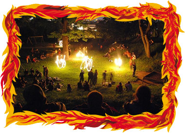

Kdo jsme
Oheň
Oheň není věc, nýbrž bytostí. Ne však bytostí neviditelnou, duchovní: oheň lze vnímat tělesnými smysly, přestože nemá tělo! Oheň roste, utváří se, vyvíjí se a množí. Při tom všem oheň pečuje o svůj tvar a vzhled – je procesem neustálé sebeproměny. Rovněž příjímá potravu – je třeba jej krmit a živit: hladoví-li, skomírá podobně jako tělesné bytosti. A podobně jako ony vyžaduje oheň vzduch, při jehož nedostatku se dusí. Období nouze však houževnatě přežívá lze jej znovu oživit z doutnajících oharků či rozdmýchat z jiskřiček, jako jiné bytosti ze zárodků, semen a hlíz.
Nerodí se ovšem z přirozených rodičů – tvoří se zázračně: z nebe s úderem blesku, lávou chrlen z hlubin, i nárazem kamene lze nechat povstat jeho jiskrným seménkům z chladného srdce bezcitné hmoty.
I když oheň je možné vytvořit či přivolat, jeho původ se přirozeným následkům a příčin vymyká: jediná jiskřička může způsobit požár, jehož dopad nezná mezí. Zmohutní-li, stává se nezkrotným a nic neodolá jeho běsnění: pak se teprve ukáže, nakolik je projevem čisté, ničím nevázané moci.
Proto je bytí ohně posvátné, numiozní, božské. Je stejné jako bytí skutečnosti, kterou nemůžeme nikdy spoutat, neboť jsme její součástí. Nelze ji spatřit, natož pochopit. Zasvěcení spočívá v proměně osobní zkušenosti sebe sama a skutečnosti země v rytmu a ohňové povaze světa.
Tribo Fuego – "Kmen Ohně"
vzniklo kolem roku 2002 seskupením lidí, kteří si našli zálibu v žonglování s ohněm. Scházeli se v samém srdci Prahy na Starém městě nebo v pražských uličkách a parcích. Tyto ohňové dýchánky vyvrcholili premiérou Tribo Fuego na Sv. Mikuláše 5. 12 2003.
Během roku 2004, Tribo Fuego pokračovalo ve vývoji a své ohnivé víry začalo předvádět i na dalších kulturních projektech, kde se vyskytuje dodnes.
Tribo Fuego se neustále snaží naplňovat myšlenku fire-perfomance se vším co k tomu patří. Každé vystupovnání je jedinečné, koncept je většinou utvářen podle charakteru akce, na kterých jsou Tribo Fuego čestnými účinkujícími. Interpretem se může stát každý, koho fascinují ohnivé víry a dokáže je svými pohyby usměrnit, každý, kdo má chuť se připojit, tvořit a rozvíjet v jakémkoliv ohnivě kreativním duchu.
Když je venku pěkně, svolává Tribo Fuego každou druhou středu ohnivé srazy, kam může přijít kdokoliv, koho zajímá žonglování a oheň, i jako divák nebo s hudebním nástrojem - k ohnivým radovánkám totiž dozajista patří i rytmus a tak se na těchto srazech stali nepostradatelnou součástí především bubeníci.
Když nástává podzim a chladné počasí, ukládá se Tribo Fuego k zimnímu spánku a ohnivé srazy se na pár měsíců přeruší, avšak na Sv. Mikuláše vyráží do ulic oslavit narozeniny.
Tribo Fuego není jen okruh lidí, nejsou to pouze ohnivé srazy. Tribo Fuego je myšlenka, stalo se rituálem. My věříme, že se tato myšlenka bude rozvíjet i v dalších srdích ve kterých praská oheň a láska.
